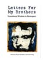
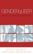

Fall 2018 NOTE: Okay folks, I know it has literally been YEARS since my last update of this page, and there are so many excellent trans books that have been published recently. I plan on doing an update of these listings when I am able to include at least 20 new titles, including some excellent resources for parents of trans kids. If you are looking for a great selection of trans and gender non-binary books, please check out the Tool Shed's trans book section, and well as their parenting book section. -Hudson
Listed below are a number of books of interest to trans men, as well as some of the men's reference books mentioned on the pages of this web site. This is not a complete or exhaustive listing of FTM, transgender, or men's books-- it is just a list of books I have read and/or have found useful for reference purposes. The listing of a book or other product herein does not imply endorsement or recommendation from the site's author, unless recommendation is stated outright. (See also the note below about recommendations for parents of trans youth, as well as family, friends, or co-workers.)
A note about book recommendations for family, friends, or co-workers
Often, people in the early stages of transition search for books that will help their family or friends better understand transgender identities. While it would be great to be able to recommend a single book to everyone for this purpose, the truth is that different books will have their own strengths and weaknesses according to each individual. For example, while one trans man might feel that Jamison Green's Becoming a Visible Man reflects his life accurately, another might feel that book doesn't resonate with his experience, and would prefer to give his friends a collection of essays such as From the Inside Out.
Additionally, it is important to consider your audience when choosing a book to give to others as an educational tool. Picking a book with graphic surgery photos or with an academic approach might not be the best choice for many people who are new to thinking about transgender issues. Finding a book with the right tone and pace-- that also echoes one's personal experience-- can be a challenge.
If you can't afford to buy a lot of books all at once, it may be wise to do a little hands-on research to find what you need: check out a few different books from the library (use inter-library loan for hard-to-find titles), browse through a few selections at your local bookstore, or borrow books from a regional FTM network. Then invest in the one or two books that best serve your needs. Keep in mind that you can always use a chapter of a book or a single essay from a collection. For example, one book may have a chapter that you know will help your family, while another book might contain a section that is better suited for your co-workers, and so on. By choosing appropriate sections from two or three books, you may be able to create a small reading packet that helps communicate effectively between you and your audience.
A note to parents of trans youth
Starting around 2015, there has been quite an expansion in the number of books and resources available for parents whose young children are coming out as trans. There are now a number of children's books and young adult books that speak to the experiences of trans youth, and there are books written by parents about their trans children's experiences. I have included a section below with some links to those books.
FTM Reading List: Sections
FTM and Transmasculine Books
Transgender Books, General Focus
Books About/For Trans Youth
Men's Grooming and Style Books
Men's Fitness Books
Becoming a Visible Man
by Jamison Green
Jamison Green is a well-known trans male activist and an eloquent advocate on transgender issues. This book is a deft combination of personal memoir, exploration of sexual and gender politics, nuts and bolts information about medical transition, and recounting of FTM community history. Green is an experienced educator, and his writing reflects this. A few of the sections may feel a little academic to those new to the topic, but the compelling personal stories interwoven throughout the text pull the reader along. This is probably the most thoughtful and compelling FTM-specific memoir available to date. A recommended read!
Body Alchemy: Transsexual Portraits
by Loren Cameron
Loren Cameron is an accomplished photographer, and this is a collection of black and white portraits of the author and other tran male subjects. Cameron does not shy away from the body, as some of his self-portraits (including the cover) are nudes; he also features a small section on genital surgery outcome photos. Descriptive text accompanies many of the images, giving voice to the numerous trans men featured in the book. For those who have simply never seen a variety of trans men before, Body Alchemy can be a revelation. This book is currently out of print, but there are often used copies available.
Self Made Men: Identity, Embodiment and Recognition Among Transsexual Men
by Henry Rubin
Self-Made Men explores the identities of 22 trans male interview subjects, relating the accounts of their personal narratives to the historical emergence of female-to-male transsexuality as an identity category. Rubin explores how social movements and historical moments have informed the evolution of a trans male subject position, while also examining the lived experience and agency of trans men as embodied subjects.
This book is academic in nature, and not a light read for those who aren't used to the language of gender theory and sociology. It is an important and compelling contribution, and a good read for those who enjoy theory!
Just Add Hormones: An Insider's Guide to the Transsexual Experience
by Matt Kailey
Kailey lived the first 42 years of his life as a straight woman, and now lives as a gay man post-transition. Just Add Hormones is a collection of essays reflecting on a myriad of topics related to the author's transition from female to male-- ranging from pieces about hormones and trans bodies, to the complexities of becoming socialized into the so-called "men's club," to thoughts about gay marriage and alliances between "GLB" and "T." Kailey's language and style are accessible and earnest, making this a breezy read.
Hung Jury:Testimonies of Genital Surgery by Transsexual Men
edited by Trystan T. Cotten
This pioneering anthology is the first of its kind, presenting raw, unadulterated testimonies of trans men's experiences of sex reassignment surgery. The collection offers a comprehensive understanding of why trans men choose genital surgery and its transformative impact on their lives. If you think you know everthing there is to know about FTM genital surgery, think again. This collection of writings may surprise you.
From the Inside Out: Radical Gender Transformation, FTM and Beyond
by Morty Diamond (editor)
This is a collection of 34 short essays that include trans male, transgender, and genderqueer contributors... and everything in-between and outside of those categories. If you are looking for personal stories that reflect varying shades of gender identity, critique the gender binary, and/or make connections to other sociopolitical movements, then this collection may have just what you need. Some of the essays are better written than others, and there are a few gems that stand out.
The Phallus Palace: Female to Male Transsexuals
by Dean Kotula
This book is an eclectic collection that includes essays by Kotula and other authors, interviews with a few medical professionals who treat and/or study trans men (including Dr. Milton Diamond, Dr. Toby Meltzer, and Dr. James Reardon), graphic photos of FTM surgical procedures (taken while surgeries were in progress--not for the squeamish), and short personal essays and photographs of 19 trans male subjects. As with Body Alchemy, for those who have simply never seen a variety of trans men before, the photo/personal essay section of the book can be helpful.
Letters for My Brothers
edited by Megan M. Rohrer and Zander Keig
In today's fast-paced world, the internet can provide quick answers to personal questions. But when an individual raised by society to live, breathe and look at the world with female eyes transitions to male, some of the most enlightening, helpful and profound advice can only come in retrospect. Letters to My Brothers features essays from respected transman mentors who share the wisdom they wish they would have known at the beginning of their journey into manhood. 20% of proceeds from the book are donated to the National Center for Transgender Equality.
Self-Organizing Men: Conscious Masculinities in Time and Space
by Jay Sennett
Self-Organizing Men explores that much-written about, highly politicized, rarely understood phenomenon known as "man." A collection of political cartoons, transgender stories, bio-dude poetry, trans art, drag king experimental prose, and some good ol', yet brand new, theories about (trans)/gender, this book will rock your thoughts about gender and masculinity. (Description from Homofactus Press)
The Testosterone Files: My Hormonal and Social Transformation from Female to Male
by Max Wolf Valerio
Max Wolf Valerio's observations about transitioning from a lesbian to a heterosexual male both challenge and confirm our assumptions about gender. As Valerio undergoes the physical and emotional changes associated with testosterone treatment, he is intrigued by his eye-opening discoveries about the nature of masculinity and femininity. Raw, gripping, and poetic, The Testosterone Files offers a perspective on men and women that only someone who's lived in both skins can speak to with such insight and eloquence. (Description from Seal Press)
What Becomes You (American Lives)
by Aaron Raz Link and Hilda Raz
"Being a man, like being a woman, is something you have to learn," Aaron Raz Link remarks. Few would know this better than the coauthor of What Becomes You, who began life as a girl named Sarah and twenty-nine years later began life anew as a gay man. Turning from female to male and from teaching scientist to theatre performer, Link documents the extraordinary medical, social, legal, and personal process involved in a complete identity change. Hilda Raz, a well-known feminist writer and teacher, observes the process as both an "astonished" parent and as a professor who has studied gender issues. All these perspectives come into play in this collaborative memoir, which travels between women's experience and men's lives, explores the art and science of changing sex, maps uncharted family values, and journeys through a world transformed by surgery, hormones, love, and... clown school. Combining personal experience and critical analysis, the book is an unusual--and unusually fascinating--reflection on gender, sex, and the art of living. (Description from University of Nebraska Press)
Both Sides Now: One Man's Journey Through Womanhood
by Dhillon Khosla
In this spellbinding memoir, Dhillon discusses openly and honestly what it has been like to live first as a woman and now as a man. Through anecdotes from his work in the courthouse, and his experiences on dates, in bars, and at strip clubs, he shares unique and profound insights into the sexes and our social mores. He also shows us that experiencing life as both genders leads to the understanding that the spiritual consequences of our actions are far more important than the political ones. But ultimately, Both Sides Now is a story about what it truly means to love oneself: the willingness to endure numerous trials and tribulations to be true to your inner voice, even in the face of extreme adversity, and no matter what the cost. (Description from Penguin Publishing Group)
FTM: Female-To-Male Transsexuals in Society
by Holly Devor
"This is the most comprehensive, professional book to date on FTM transsexualism and the many aspects of their life journeys. For its volume, this book is clearly understandable and reads without excessive use of scientific and academic rhetoric, thus making the book available to a broad audience. It is nonjudgmental, nonsensational, and provocative in its honesty, interpretation, and challenge to the future of societal opinion regarding FTM gender identity." (Description from the Journal of Sex Research)

Transmen and FTMs: Identities, Bodies, Genders, and Sexualities
by Jason Cromwell
"Writing as an insider and an anthropologist, Jason Cromwell presents the first in-depth examination of what it means to be a female-bodied transperson. Through extensive participant observation and open-ended interviews, Transmen and FTMs allows female-to-male transsexuals to speak for themselves and reveal aspects of female gender diversity that do not fit into the ready-made categories of male and female." (Description from University of Illinois Press)
Transgender Books, General Focus
Whipping Girl: A Transsexual Woman on Sexism and the Scapegoating of Femininity
by Julia Serano
Whipping Girl explores trans issues, gender, and feminism mainly through the lens of trans women's cultural experiences; however, many trans men will find Serano's astute observations to be a breath of fresh air. Serano moves away from the popular format of trans tell-all, and instead breaks new ground by reconsidering popular and academic terminology around sex and gender, while hammering out new understandings of transgender identity in mainstream and feminist cultures. She argues for the need for a cultural valuation of femininity-- as well as all gender expressions as manifested in all types of bodies-- in the struggle for human equality.
In some sections, this book can be a bit academic in tone, but is still quite accessible to those new to thinking about gender and trans issues. Those who have been connected for many years to trans dialogues and community trends will probably find this book to be thought-provoking and ground-breaking. A recommended read!
The Riddle of Gender
by Deborah Rudacille
Rudacille's book is a superbly written and well-researched exploration into issues around gender variance. She recounts the history of the study of transsexuality, from the early days of Magnus Hirschfeld's clinic in Berlin, to Harry Benjamin's practice in the United States, to university-based gender clinics, and on to the present. She even-handedly considers controversies around gender reassignment procedures, and entertains various theories that may explain gender variance. She also touches on intersex conditions. Interspersed throughout the book are conversations with notable trans men and women, whose voices add depth and texture to her prose.
Rudacille is an accomplished science writer; her style is quite accessible to those new to the topic, while her interesting research and thoughtful approach offers much to those who are already familiar with the terrain of transgender issues. A highly recommended read!
How Sex Changed: A History of Transsexuality in the United States
by Joanne Meyerowitz
Meyerowitz opens her historical account with a focus on the much-publicized "sex change" story of Christine Jorgensen in 1952. She then goes on to chronicle the evolution of transsexuality as a medical, legal, and cultural concept within the past century. How Sex Changed is packed with information on numerous of pivotal individuals and significant historical moments; Meyerowitz includes stories of pioneering trans people, as well as accounts of the doctors, scientists, lawyers, activists, and other prominent figures who played a hand in the unfolding ideas around changing sex. She also explores the complicated relationship between trans people and the gay rights and feminist movements.
Through this recounting, Meyerowitz demonstrates how definitions of sex and gender have shifted in popular science, medicine, and law. For those looking to know more about how we have come to understand the concept of transgender identities today, this book is a good starting place.
Evolution's Rainbow: Diversity, Gender, and Sexuality in Nature and People
by Joan Roughgarden
If you've ever wondered about scientific observations and theories of sexual and gender diversity in animals and humans, then you're in for a treat with Evolution's Rainbow. Joan Roughgarden, a professor of biology at Stanford University, argues that the diversity of gender and sexuality that is found in many species suggests that Darwin's theory of sexual selection is false, and based on cultural bias.
The first part of her book provides a fascinating catalog of gender and sexual diversity among fish, reptiles, amphibians, birds, and mammals. Roughgarden then goes on to consider how diversity develops in humans, taking the reader on a tour of embryonic development at the genetic, chromosomal, and hormonal level. She explores ideas of brain differences among humans, and queries as to whether "transgender brains" or "gay brains" might exist. The final section of her book explores how different cultures have come to catalog and understand human sexual and gender diversity differently.
Though this is a long read at over 400 pages, Roughgarden's style is witty and she explains scientific concepts in a down-to-earth manner. A recommended read!
Trans Forming Families: Real Stories About Transgendered Loved Ones, 2nd Edition
by Mary Boenke (editor)
Trans Forming Families editor Mary Boenke is the mother of an adult FTM son. In this compilation, she has collected 40 short accounts by parents, partners, children, and friends of transgender people, who describe their experiences coming to learn about and accept the trans people in their lives. Many trans people and their loved ones have found the stories in this book to be helpful during the early stages of transition.
GenderQueer: Voices From Beyond the Sexual Binary
by Joan Nestle (editor), Riki Wilchins (editor), Clare Howell (editor)
This is a collection of short pieces by 36 individuals (35 if you discount the conversation with the now-known-to-be-fictional "JT Leroy") of many gender identities and embodiments, including genderqueer, FTM, MTF, intersex, trans, butch, femme, queer, and more. There are also introductory pieces by all three editors. If you are looking for personal stories and short essays that reflect numerous gender identities and explore the limits and possibilities of gender, or if you have an interest in queer studies or gender studies, then this book will have much to offer.
Transgender Warriors: Making History from Joan of Arc to Dennis Rodman
by Leslie Feinberg
Transgender Warriors is a combination of the author's personal story and a fascinating historical chronicle of gender variance throughout the ages. Feinberg documents numerous examples of cross-gender, third gender, and other gender roles and behaviors across cultures, historical periods, and continents. Feinberg also makes the case for a link between class and gender oppression. The latter part of the book looks at the modern history of the transgender movement, complete with numerous photos and quotes from a variety of trans activists and others.
This book is written in a very accessible style, features lots of interesting photographs, and contains documentation for those who wish explore gender variant traditions and history.

The Transgender Studies Reader
by Susan Stryker (editor), Stephen Whittle (editor)
Although the term "transgender" itself has achieved familiarity only within the past decade, this authoritative collection of articles demonstrates that the study of behaviors, bodies, and subjective identities which contest common Eurocentric notions of gender has a history stretching back at least to the early 20th century.
The Transgender Studies Reader includes fifty influential texts with new introductions by the editors that, taken together, document the evolution of transgender studies in the English-speaking world. By bringing together the voices and experience of transgender individuals, doctors, psychologists, and academically-based theorists, this volume will be a foundational text for the transgender community, transgender studies, and related queer theory. (This description was provided by the publisher.)
Transgender Rights
by Paisley Currah (editor), Richard M. Juang (editor), Shannon Price Minter (editor)
With analysis from legal and policy experts, activists and advocates, Transgender Rights assesses the movement’s achievements, challenges, and opportunities for future action. Examining crucial topics like family law, employment policies, public health, economics, and grassroots organizing, this groundbreaking book is an indispensable resource in the fight for the freedom and equality of those who cross gender boundaries. Moving beyond media representations to grapple with the real lives and issues of transgender people, Transgender Rights will launch a new moment for human rights activism in America. (This description was written by the publisher.)
Sexing the Body: Gender Politics and the Construction of Sexuality
by Anne Fausto-Sterling
Anne Fausto-Sterling, a biologist at Brown University, draws on centuries of scientific research to argue that our fundamental knowledge about sex is shaped by the culture in which scientific knowledge is produced. She asserts that the duality of male/female is not so simple, and that nature produces bodies that don't easily fit into those categories.
This book brims with historical documentation and has a copious notes section. While not a transgender-focused book per se, it does provide much food for thought regarding our cultural beliefs about sex and gender, and about the biases that can come to play in scientific discourses.
Transition and Beyond, Observations On Gender Identity
by Reid Vanderburgh
Written in an easy-to-read style, Transition and Beyond will help anyone seeking accurate information about what it means (and doesn't mean) to be transgender. Transition and Beyond addresses many topics, including partner/spouse responses, telling family members, fundamentalists transitioning, addiction and transition, workplace disclosure, youth and transition, learing the "rules" of a new gender role, considering "post-transition," and more. A good book for trans people, family members and friends, and therapists. Author Reid Vanderburgh is a licensed therapist and someone who transitioned (female-to-male) in the mid-1990s.

Beyond the Natural Body: An Archeology of Sex Hormones
by Nelly Oudshoorn
While not a transgender-specific piece, this book is a fascinating account of the history of early twentieth-century sex hormone research. Oudshoorn demonstrates how cultural notions of gender differences informed early research into sex hormones, as well as how these ideas shifted as new discoveries continued to be made about hormones and as researchers from various scientific disciplines approached the work from their own vantage points. This book is very well-written and engaging, though it may be a bit academic for some. A great read for those interested in the history of science, as well as those who enjoy thinking more about the interplay between science and cultural understandings of hormones, gender, and sex.
Men's Grooming and Style Books
The Art of Shaving
by Myriam Zaoui and Eric Malka
If the information provided on the Shaving page of this site wasn't quite enough for you, then maybe this little book will do the trick. The Art of Shaving contains information on the history of shaving, skin types and skin care, shaving tools and products, techniques, and other practical advice.
One Thousand Beards: A Cultural History of Facial Hair
by Allan Peterkin
This is a fun book about facial hair trends and styles throughout history, beginning with accounts from antiquity and ending at the turn of the 21st century. This volume contains over 150 photographs and illustrations of famous men (and some women) with facial hair. The final chapter contains practical advice on choosing a beard style, tips for growing and trimming of beards and mustaches, and "recipes" for different styles of facial hair. The bulk of the book, however, is not a personal grooming manual-- it is simply a lighthearted, comprehensive tour of the ever-continuing rise and fall of facial hair's popularity and place in history.
The Art and Science of Barbering
by L. Sherman Trusty
The Art and Science of Barbering is a long-out-of-print barbering manual that was published in numerous editions between 1956 and 1969-- it is sometimes available from used booksellers, though you may have to search multiple listings for different editions. It is a textbook for the barbering student, and a fun and interesting read for those who love barber shops and barbering history. Includes sections on haircutting (of course!), as well as straight razor care and shaving, mustache and beard styling, and facial massage. There is even a section on the history of barbering. The book has about 600 photographs and drawings of tools of the trade, diagrammed instructions, and hair styles. A fun book for those who love barber shops.
The Vanishing American Barber Shop : An Illustrated History of Tonsorial Art, 1860-1960
by Ronald S. Barlow
This book was published in 1993, and is a comprehensive collection of barber shop history, tracing the evolution of barbering from ancient Egypt, Greece, and Rome through the mid-twentieth century. In addition to the entertaining text about barber shop history, the book is full of reproductions of vintage photographs, illustrations, and barbering catalog pages, as well as reprinted materials from old barbering manuals. A fun book for those who love barber shops and shaving history.
Dressing the Man: Mastering the Art of Permanent Fashion
by Alan Flusser
Dressing the Man is a comprehensive guide to men's formal wear (suits, dress shirts, ties, "smart casual" and so on). It does not have specific information about more casual styles of dress.
Flusser argues that to dress well, one should not rely on trends of fashion, but rather on principles of proportion and color. He takes into account the shape of the face, the length of the neck, proportion of arms and shoulders, the torso's structure, and instructs on how to adapt the fundamentals of clothing style to one's physique and complexion.
If the details on the Suits and Ties for the Beginner page left you wanting more information about men's formal styles, then this book may be for you!

The Indispensable Guide to Classic Men's Clothing
Josh Karlen and Christopher Sulavik
This book covers the basics of more formal menswear such as suits, shoes, dress shirts, ties, and so on. It does not have specific information about more casual styles of dress. The language is concise, focused, and easy to read. The authors answer basic questions about style that many guys may be afraid to ask! Not quite as comprehensive as Flusser's Dressing the Man, but certainly provides a solid foundation of men's classic style.
The 85 Ways to Tie a Tie
by Thomas Fink and Yong Mao
If you are looking for ways to tie your tie that go beyond the four-in-hand, Windsor, Double Windsor, and Pratt knots, then this book is great fun. Written by two physicists at the University of Cambridge, The 85 Ways to Tie a Tie provides a unique mathematical approach for generating knots-- but you don't need to be a math whiz to use their handy diagrams. They also throw in a little neckwear history, and give some useful advice as to which knots look best with certain face shapes, collars, and ties.
Dress Your Best: The Complete Guide to Finding the Style That's Right for Your Body
by Clinton Kelly and Stacy London
This book is authored by the hosts of TLC's television show "What Not To Wear." While the larger front section of the book is devoted to women's clothing choices, the final 67 pages describe how to best fit 8 different types of men's bodies: short, average, tall, athletic, small-framed, barrel-chested, tummy, and hips. The book uses photos and practical tips to describe clothing choices for work, weekend, and evening wear.
Back to Hudson's FTM Resource Guide Main Page
Copyright, disclaimer, and privacy information